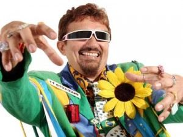

Marcondes Falcão Maia
Sobre mim
 Marcondes Falcão Maia (Pereiro, 16 de setembro de 1957), mais conhecido pelo seu nome
artístico Falcão, é um cantor, apresentador e compositor brega notado pelo estilo irreverente e cômico. Tem nove discos
gravados, com sucessos como as canções "I'm not dog no", "Black People Car", "Holiday Foi Muito" e "I Love You Tonight".
Formação
- Técnico em edificações na Escola Técnica Federal do Ceará em 1978
- Arquiteto na Universidade federal do Ceará em 1982
Experiencia profissional
| Empresa |
Descricao |
Periodo |
| Cantor |
Bonito, Lindo e Joiado - O Dinheiro não É Tudo, mas É 100% - A Besteira É a Base da Sabedoria - A Um Passo da MPB - Quanto
Pior, Melhor - 500 Anos de Chifre - Do Penico à Bomba Atômica - What Porra Is This? - Sucessão de Sucessos Que Se Sucedem
Sucessivamente Sem Cessar. |
1992-2015 |
| Apresentador de TV |
Falcão na Contramão (TV Bandeirantes) - Leruaite (TV Ceará) - TV Diário |
1998 - 2015 |
| Participações especiais |
O Clone - A Praça É Nossa - Hermes E Renato - The Noite com Danilo Gentili |
2003-2015 |
Contato:
- twitter: @brega_falcao
- 55 11 2093-2229
- lhassessoria@terra.com.br
- facebook.com/cantorfalcao/
"Dinheiro não é tudo, mas é cem por cento. "